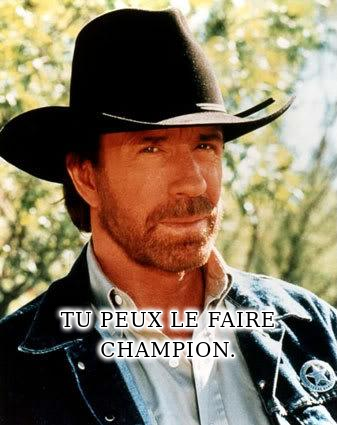

Utilise la documentation de l'API : Chucknorris.io pour récupérer des blagues aléatoires sur le champion de karaté et acteur Chuck Norris.
Pour accomplir ta mission, tu devras compléter le script dans le fichier solution.js.
joke:
joke's categories: